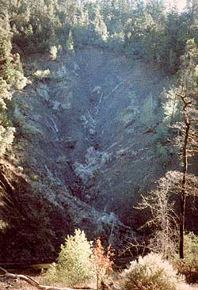

Would you like to grow timber on your land? Well, there are three basic ways of doing it.
[1] You might want to raise your trees as a commercial farmer raises corn. You plant young trees all in straight rows, all at the same time, and all from the same seed stock. You spray your fledgling forest with herbicides to kill the "weeds" that compete with your "crop" of trees. You spray it again with insecticides should the need arise. You fertilize the soil with chemical compounds to hasten the growth of your stock. And when your trees finally reach a marketable size, you cut them down all at once. A farmer does not harvest every fifth cornstalk and leave the rest; he systematically clear-cuts his field. So it is with trees. You clear-cut the forest to make room for your next crop of timber.
These are the techniques used in industrial tree fanning. They might or might not appeal to your fancy. Today, though, more and more people who know and love the woods have become understandably suspicious of such a technological manipulation of the forest environment. One of these, timber-owner Fred Behm, a lumberjack who has worked in the woods for 60 years, says:
I belong to this small tree farm organization, and a year ago we made a tour of the Weyerhaeuser tree farm at Cottage Grove [Oregon]. They took us up on the mountain there, and we could look down across it: It was one of the most beautiful sights I've ever seen-thousands of acres of reproduction. But then I looked at it closely and got to thinking about it. It's one of the most depressing things I've ever seen, too.
Nothing is going to be there. They'll precommercial thin when the trees are 15 or 20 years old, then in 50 years they'll clear-cut. It'll be like a cornfield. There'll be no snags, no old logs in there. Wildlife-squirrels, birds, and salamanders-will have no place. So many creatures live in the snags and under the old logs. What's it gonna be like without them? Like I say, it's beautiful but depressing.
My personal opinion is that nature knows what it's doing, and if you interfere too much with nature, you're going to have problems.
[2] As another option, then, you might try leaving nature alone. Unbridled nature will certainly grow trees. The impressive forests that once covered much of the North American continent gave witness to such bounty. But the ways of nature are slow, even tedious. A cutover tract of land, if left to itself, will go through a gradual progression from brush to mature forest . . . but each separate stage takes time. The entire process of forest succession will often take more than a century to work itself out.
Do you really want to wait that long? Or are there any ways of speeding up this successional process that complement, rather than contradict, the laws of nature? Is there some middle road between overmanagement and no management at all?
[3] Yes, there is. The third strategy for raising timber on your land is wholistic forestry. Reacting to the excesses of industrial manipulation, wholistic foresters attempt to manage the woods according to the basic ecological principles of balance and diversity. Instead of simplifying the ecosystem by eliminating unwanted elements, they prefer to utilize all elements to the best advantage of the entire forest. Like industrial tree farmers, they are interested in the production of timber. Unlike industrial tree farmers, they treat the forest as a complex, interdependent system with a life of its own.
But how can you make it work out in practice?
If you're like most would-be foresters, you will probably be starting with land that has already been abused. If you want to grow decent timber wholistically, you will first have to make sure your soil is not going to wash away. Erosion is a most serious enemy, but it can be stopped. You can build check dams in the gullies to slow down the flow of water that undercuts the topsoil. You can build retaining walls of live brush (called contour wattles ) on the hillsides to keep those slopes from sliding away. And you can also plant a cover crop of quick-rooting, pioneer vegetation to help hold the soil in place.
Wholistic forester Gerald Myers-who descends from several generations of loggers-lives in one of the fastest-eroding and most severely damaged watersheds in the country. Yet he is convinced he can grow timber on his land:
Three or four years ago, I started daydreaming about taking this damaged environment and trying to put it back together. That was the first time I started thinking wholistically about this 19-square-mile watershed I live in. I decided to create a labor-intensive environmental repair project that would take the out-of-work rural poor (which we have a lot of) and the damaged woods, and put them together.
One of the interesting things about this wholistic approach is that-when you look at the whole site-you find that a lot of the work fits together. For example, in timber-stand improvement you generate a lot of waste material, and that can be used for erosion control, in contour wattles and check dams. That way, you cure two problems at once.
But most government programs and industrial forestry contracts talk about a contract for just one thing . . for timber-stand improvement, or for conifer release, or for this or for that. And you get into some of the craziest kinds of situations that way. For example, suppose you are doing a umber-stand improvement project, and a gully runs through the 40-acre tract you are working on. You may be required by contract to burn the stuff you cut, instead of using it to stop erosion in the gully.
The concept of wholistic watershed repair, though, is extremely logical. This watershed is a natural, ecological, social, geographical unit. It's a whole piece. When you work on helping that, your efforts have favorable effects all the way down.
Another way to help heal your land is to make use of some noncommercial species that occur naturally on your site. Consider, for instance, the red alder, the ubiquitous "weed tree" of the Pacific Northwest. A pioneer species that commonly appears on damaged sites, alder is a quick-rooting tree that penetrates compacted ground, aerates the earth, and stabilizes slumping soils. The roots host nitrogen-fixing nodules that can put more than 200 pounds per acre of atmospheric nitrogen back into the soil each year. The leaves the alder sheds each fall give the soil another 100 pounds of nitrogen per acre per year: three times more than an average coniferous tree would contribute. As an added benefit, alders host certain mycorrhizae that minimize the incidence of root diseases, not only for themselves, but also for neighboring trees of different species.
There are two ways you might want to manage a weed tree such as alder, this natural healer of damaged land. You could allow the alders to prosper unimpeded for about ten years, during which time their nitrogen-fixing capacity is at its greatest. Or, if you don't want to wait that long before planting your commercial timber, you could allow some commingling between your soil-building alders and crop trees. You will probably be pleased with the results, since most commercial species tend to do better in proximity to alders than they would otherwise.
But you will have to watch your land closely, since alders, during their infancy, grow far more quickly than commercial conifers. If you don't hold them in check, the "helpers" might actually take over your site. If you were an industrial tree farmer, you would prevent such a calamity by serially spraying herbicides over your entire tract. Wholistic foresters, however, handle the problem differently: They go through the entire forest on foot, cutting away only those"weeds" that are actually interfering with the trees they are growing for timber. This process is called manual release, and it provides on-the-spot attention for each little nook and cranny of the young forest. In the words of Rick Koven, a brush-cutter from Eugene, Oregon:
With manual release we come in and say, "What does each microsite need?" We make a human decision. Let's say I'm in a slide, and there's lots of erosion going on. I look in there and I see all these alders and brush, and they're the only thing holding that slide together. There's also a couple of little suppressed firs. I say, "If I cut those alders, that soil all comes down and there's no fir." So I don't cut them.
In site-specific forestry, instead of releasing every crop tree in the unit, you only release the trees that you decide will be most commercially valuable. Therefore you don't use strict spacing, you go for reasonable spacing. You choose the healthiest trees. Don't say, "We have 1,000 acres, and we want 520 trees an acre, and therefore the spacing is ten-by-ten, so we'll release every tree ten-by-ten apart ...." That's how the big companies work. It's strictly geometrical. Instead, you say, "Is that the most productive way to do it? No! The most productive way is to make the decisions when we get there."
By releasing your timber individually and manually, you eliminate the need for poisonous herbicides; by enriching your soil with "green manure" vegetation, you eliminate the need for chemical fertilizers. You can also lessen the need for pesticides by allowing for a wide variety of living species within your wholistically managed forest. A varied forest has its own natural balancing mechanisms: Disease is less likely to spread in a mixed stand of trees, and insects will be held in closer check because you'll be maintaining a habitat for insect-eating birds.
The different species in your forest will probably mature at different times. This will enable you to avoid clear-cutting. Instead, you can harvest your trees selectively. When it is time to decide which trees to cut and which to leave, don't make your decisions on some arbitrary, preconceived idea of how big the timber should be. Instead, the first trees you cut should be those that are stifling the growth of their neighbors. Your major concern should always be the future development of the forest.
How do you remove the timber you want without injuring the trees that are still left in the ground? That's a tricky business. As Bud McCrary-one of the professional loggers in the California redwoods who specializes in selective cutting-points out:
You have to have darn good fillers to practice the kind of selective harvesting we do, because you don't want to damage too many of the smaller trees. You don't just send some joker up there and say, "Here's a chain saw. Go up there and fall that mountainside." You've got to have somebody who really knows what he is doing. We also do a lot of cable rigging and jacking to pull the trees the way we want them to go. That all takes more time and more labor.
One of the most sensitive aspects of timber harvesting, according to McCrary, is the road-building:
More than the cutting, it's excavating that is really damaging our resources in the long run. We use small equipment, careful planning, and narrow blades. We actually try to cut our roads with very, very sharp-bladed equipment. It's like a surgeon using a scalpel. If you make sharp and clear incisions, then you make very light incisions; whereas, if you use a blunt instrument, it takes a lot more power to operate it, to push it through. The equipment doesn't handle as well. You don't build a road just exactly where you want it, so you're moving more soil to get the same results. If you have sharp blades-real dagger corners at the end of the dozer blades-you can put that thing right where you want it. You don't have to dodge off, go above or below a rock: You go through the damn thing. You'd be amazed at the kind of roads we build.
Heavy equipment such as bulldozers and logging tractors is capable of doing severe damage to the land. Bud McCrary handles them well, but they are commonly misused. In some cases, you might be able to utilize animal power rather than machine power. Horses can serve as ideal logging tractors: They pick up their "wheels" and step over the small irregularities in the earth's surface, instead of driving relentlessly over every little obstacle. But if you want to use flesh and blood instead of steel, you have to be working with appropriate timber on appropriate terrain. In the words of horse-logger Joaquin Bamford:
In horse-logging you have to look at the timber before you go and say, "Yeah, I can log that." The best type is second growth, timber that ranges from 15 years to 40 or 50 years. You want it small, but not too small. We usually won't go into timber that is less than 12 inches on the butt.
And you need to look at the land. You want a downhill pull, if at all possible. You look at your terrain. You find out what the soil is like: whether it's loose soil, whether it's on a steep hillside, whether there will be erosion where you drag the timber down. You have to look at it as a conservation practice.
The ideas behind wholistic forestry might seem foreign to the American tradition of environmental exploitation. Elsewhere, however, wholistic forestry has been practiced successfully for years. Dr. Rudolf Becking, a forestry professor now working in Indonesia, reports that this kind of well-balanced forest management has a long tradition in the Couvet district in Switzerland, where he received his professional training:
Experience taught the Swiss many centuries ago that when you start to do heavy cutting-clear-cutting-then avalanches will develop, and the whole safety of the valley will be threatened because of these steep mountain slopes. It is of paramount importance to keep trees on the slopes, because that is the people's protection. So a primitive management system developed, where they only cut a few trees here or there. Experienced farmers were elected by their community to designate which trees would be cut this year, and which trees would be cut next year, and so on.
The same farmers always come back. There are no contracts where they come in to make this amount of money and then disappear. A tradition has developed. All the way down to the worker, you have a commitment to a specific piece of land. And specific trees.
The forester not only has to mark the timber, he has to reason out which tree to cut. And he marks which direction it has to go. He has to do it in such a way that his first concern is the replacement, not to lose the growing stock. What can he substitute in its place? He releases some younger trees, which then will grow faster. This is the process-but sometimes he makes mistakes.
Then the faller will immediately spot the mistake. He'll recognize which way the tree will go, and, if that differs from what the forester had in mind, the faller can halt the process. He can say, "I don't want to cut the tree this way."
Certain trees that are too big-crowned are earmarked, and then the faller will have to climb the tree. He will saw off the branches and actually lower the branches by rope, so they don't break some regeneration. Then once the branches are off, he will drop the tree like a pencil into the stand.
The future, it would seem, looks bright for wholistic forestry in our own country. This system of beliefs is based on the principles that everything in the world is connected, and that, in this finite, interconnected space, nothing can be wasted or ignored. The fundamental strategies of wholistic forestry are as simple as a Zen precept: Use manual labor whenever possible . . . avoid artificial substances . . . treat each site as a specific problem in the context of a totally connected world ecosystem . . . find strength in balance and diversity . . . and the golden rule-complement, rather than contradict, nature's actions as much as possible.
Significantly, wholistic forestry differs from the preservation movement and other voices opposed to industrial tree farming in that it is an active, not a passive, approach. Wholistic forestry acknowledges our economic need to use the forest as a resource. And as resource-oriented problems become ever more prominent, a passive approach to the bulk of our productive forestland will no longer be tolerated. Hence, it is the activism of wholistic forestry that is its greatest hope.
So, if you want to grow trees that eventually will be cut down-but you love the woods-then wholistic forestry is just right for you. You too can help produce the timber we need . . . by growing trees the sensible way!
EDITOR'S NOTE: For some wise forestry words from our 1983 choice for the Environmental Hall of Fame, see page 117.
|
 Severe erosion can be a by-product of industrial clear-cut tree farming. With environmental damage like that, no wonder many people concerned about forests practically cringe when they hear the word ""timbering"". But the choice doesn't always have to be between total destruction and no tree harvesting at all. |
Wholistic foresters decide what action to take depending on the needs of an individual site. Here, two men build contour wattles to help stem erosion damage caused by timbering. |
|